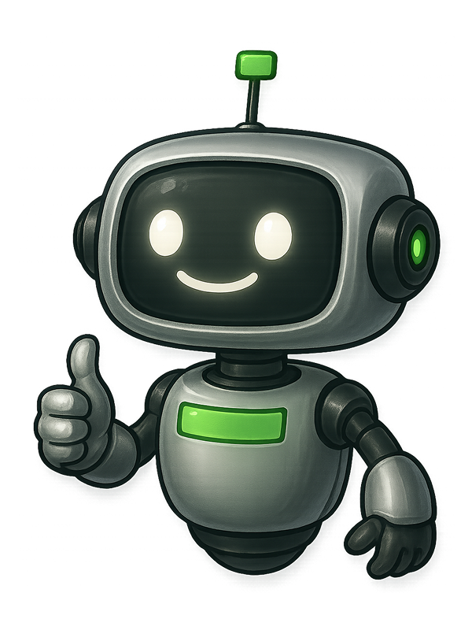

WELCOME TO ROBOSTACK
An exploratory robot AI training platform website, focused on presenting physical world models and visualizing AI training effects. It was my first project to bring AI pipelines into the design workflow, shaping an atompunk visual style.
Outcome & Reflection
Robostack turned an abstract robot AI training concept into a clearer visual story.
Robostack was an exploratory robot AI training platform website focused on presenting physical world models and visualizing AI training effects. The work gave the early product a more tangible first impression, using an atompunk visual language to make the relationship between model, training, and outcome easier to understand.
Make the model visible first
For a robotics AI product, the most important story is not an abstract capability claim. The page needs to show the physical world model and make the training effect feel inspectable.
Style can reduce technical distance
The atompunk direction gave the project a recognizable atmosphere while keeping the product grounded in robot training, spatial intelligence, and machine perception.
AI pipelines changed the design process
This was my first project bringing AI pipelines into the design workflow. It helped accelerate visual exploration while still requiring careful curation to keep the final direction coherent.
Next project
Montecarlo
Innovation hackathon / Specialized AI agent